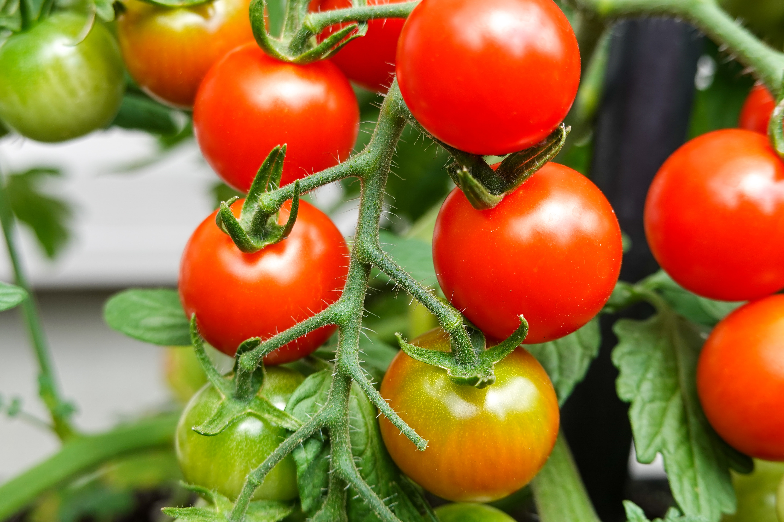
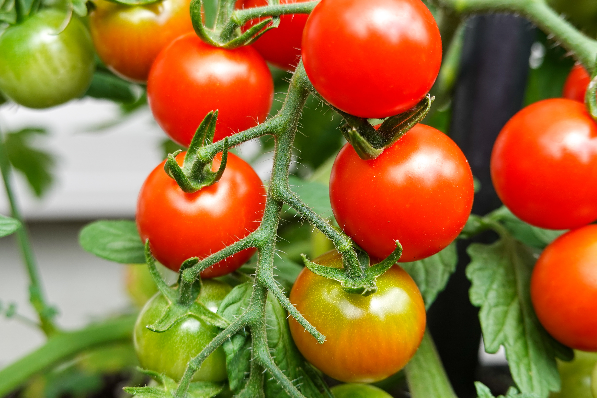

My Favourite Hobby
I am a student and I have also a hobby. My favorite hobby is gardening. I have a garden in the backyard of my house. In the summer season, every day I work in it. I lose the soil with a spade and weed out the grass. I water the plants regularly. I love gardening because gardening is an activity that's good for both the mind and body. Also, I can get to eat the delicious fruits, vegetables, and herbs that I grow.
There are two parts in my garden. In one part, I plant different kinds of flowers such as rose, China rose, sun-flower etc. I feel very happy when the flowers bloom. They spread sweet smell. The garden also looks very charming. Another part, I plant different kinds of vegetables such as carrot, radish, cabbage, cauliflower, tomato, chilly etc. It also gives me pleasure. When my friends and relatives come to our home, I take them into my garden and show them the garden. They become very happy to see it and thank me.
It's no surprise that you feel better after finishing off the day's gardening work. Working with your hands and taking care of your plants on a regular basis can make even the worst tension disappear.